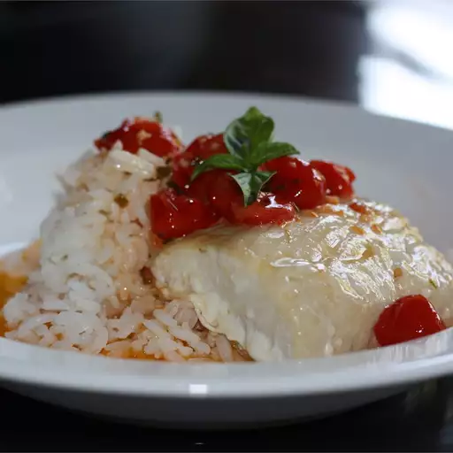

Accidental Fish

Description
This accidental fish recipe is one of my family's favorite fish
recipes for Southern-style cooking. Serve this dish over rice.
Steamed vegetables go great with it.
Ingredients
- 2 (4 ounce) fillets mahi mahi
- 2 teaspoons olive oil
- ½ cup salted butter
- 1 tablespoon lemon juice
- 1 clove garlic, minced
- 2 drops Louisiana-style hot sauce, or to taste
- 1 Roma tomato, seeded and chopped (Optional)
- 1 green onion, chopped
Steps
- Preheat the oven to 450 degrees F (230 degrees C).
- Rub fillets with oil; transfer to a baking dish.
- Bake in the preheated oven until fish flakes easily with a fork, about 20 minutes.
- Meanwhile, melt butter in a saucepan over medium heat.
Add lemon juice, garlic, and hot sauce; simmer for 1 minute.
Add tomato and green onion; cook and stir until heated through.
Spoon over fillets to serve.
Home